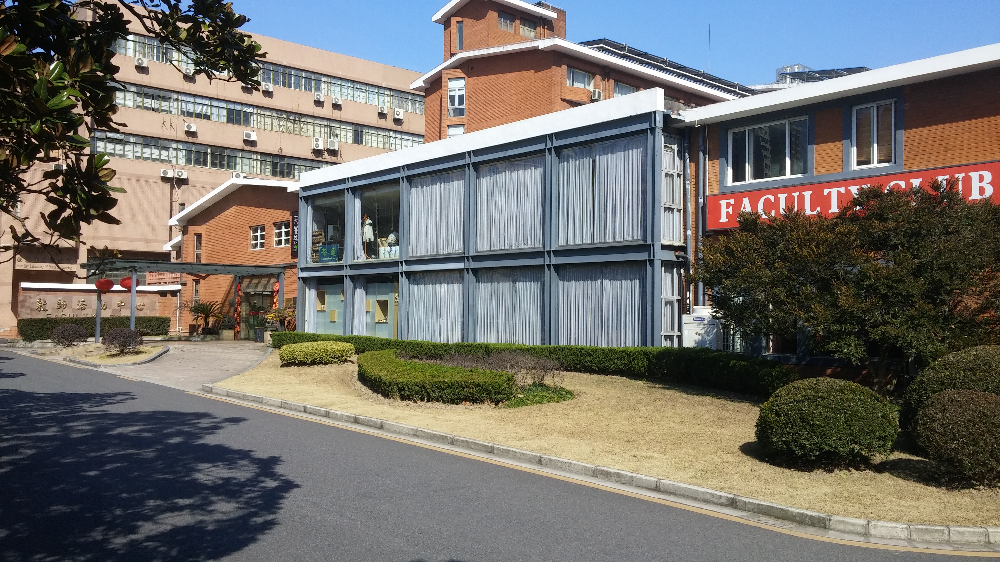
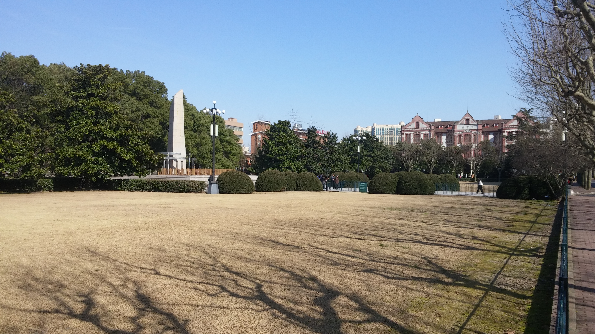
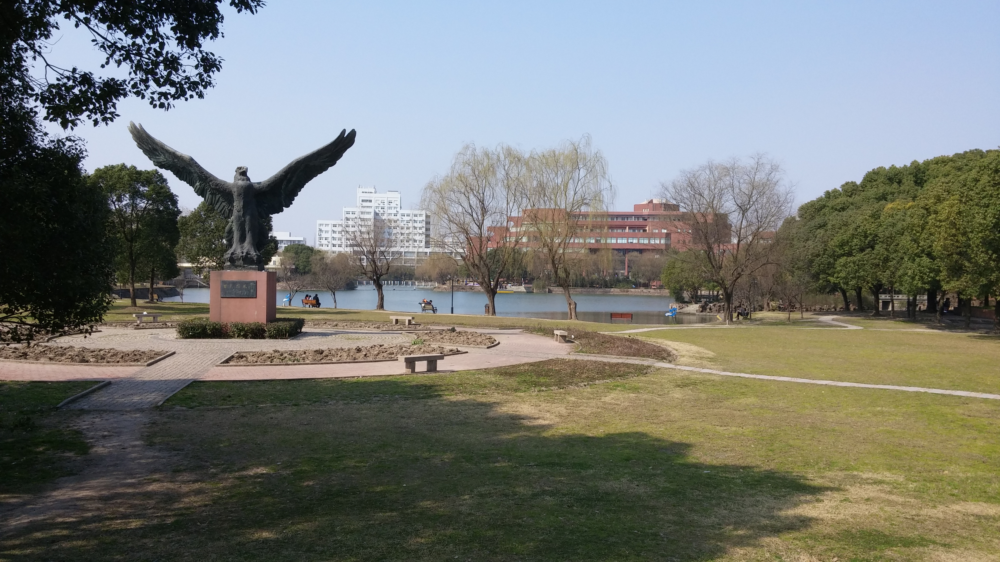
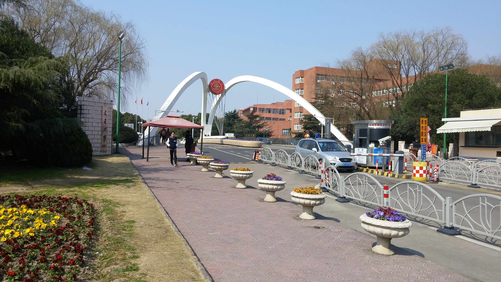

I spent the semester at Shanghai Jiao Tong University. SJTU is one of the best STEM schools in China. There are several campuses, and I spent time at two of them. From January 6 - February 18, I was located at the Xuhui campus, close to the city center. This is a smaller urban campus which is primarily home to graduate programs, the business school, and the law school. The main entrance to the Xuhui campus is shown above. From February 18 - May 13, I was located at the Minhang campus, the largest campus that houses most of the undergraduate programs.


For the six weeks the Purdue group spent at this campus, our home was the SJTU Faculty Club. It is similar to the hotel at the Purdue Memorial Union, but not quite as nice. On the right is a picture of the main quad here. Older people from around the city do tai chi around the statue every morning. This group frequently included an older gentleman with a two foot long sword. I never got close enough to tell if it was real.
The Xuhui campus was very quiet during our time there. The long winter break in the Chinese academic calender is over Chinese New Year, so the rest of the campus was on break from January 23 - February 19. My Purdue cohort only got 10 of those days off.


For the last 12 weeks of the program, we stayed at the Minhang campus. This campus is located about 25 km south of downtown, an hour by subway. Everything on campus is very spread out, even compared to Purdue, and I lived about a mile off campus, so I bought a cheap bike for navigation. This campus felt like more like the large public school campuses I grew up around (UNC, IU, Purdue) than the urban Xuhui campus. Crowds of students on bikes pedal around to class, the dining halls, the library, and the gym.
At this campus I took 3 classes: Thermodynamics II, Heat and Mass Transfer, and Structure and Properties of Materials. The classes were in English, and the schedule was accelerated (12 weeks, compared to the usual 16). Each lecture had about 35 students, evenly split between Purdue students and SJTU students. The SJTU students took the class as an opportunity to practice English and work toward a techincal English skills certificate/minor. Interestingly, the Chinese students don't have labs, so the Purdue students have a special lab class for Heat and Mass Transfer.